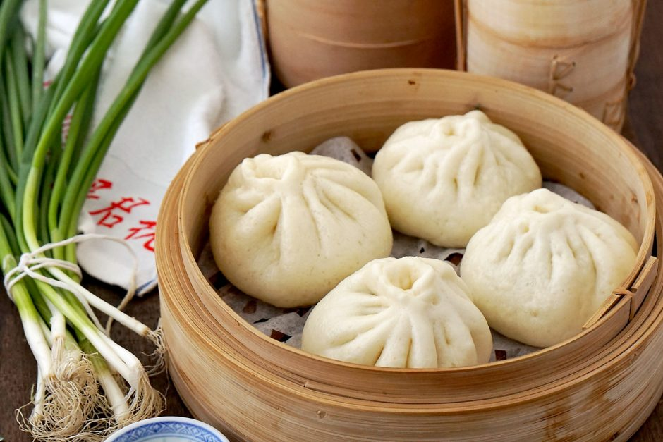

Chinese Food
Chinese Steamed Pork Buns (Baozi)
Tasty, juicy filling with soft, fluffy wrappers, homemade bao buns are super comforting! This guide offers tips and tricks to ensure a fail-proof cooking experience.
Popular as street food and an everyday family dish in China, steamed bao buns (Baozi, 包子) is one of the foods I really enjoy cooking. They are not difficult to make but it can be very tricky to get them right, especially when it comes to making a nice wrapper which rises properly, has a smooth look and a soft, fluffy texture.

INGREDIENTS FOR CHINESE STEAMED PORK BUNS(SERVES 12)
Dough
- 500g plain flour
- 250ml warm water
- 1 tsp dried yeast
- 1 tbsp sugar
Filling
- 350g pork mince
- 1 tsp grated garlic
- ⅓ cup salt-reduced chicken stock
HOW TO MAKE Baozi
- In a bowl wash rice well in several changes of cold water until water is clear.
Soak rice in cold water to cover overnight.
- Drain rice well in a sieve. Set sieve over a large deep saucepan of simmering water (sieve should not touch water) and steam rice, covered with a kitchen towel and a lid, 30 to 40 minutes, or until tender (check water level in pan occasionally, adding more water if necessary).
-
While rice is cooking, in a small saucepan bring 1 cup coconut milk to a boil with ⅓ cup sugar and salt, stirring until sugar is dissolved, and remove from heat. Keep mixture warm.
-
Transfer cooked rice to a bowl and stir in coconut-milk mixture. Let rice stand, covered, 30 minutes, or until coconut-milk mixture is absorbed. Rice may be prepared up to this point 2 hours ahead and kept covered at room temperature.
-
While rice is standing, in cleaned small pan slowly boil remaining ⅓ cup coconut milk with remaining 3 tablespoons sugar, stirring occasionally, 1 minute. Transfer sauce to a small bowl and chill until cool and thickened slightly.
-
To serve, mold ¼ cup servings of sticky rice on dessert plates. Drizzle desserts with sauce and sprinkle with sesame seeds. Divide mango slices among plates.